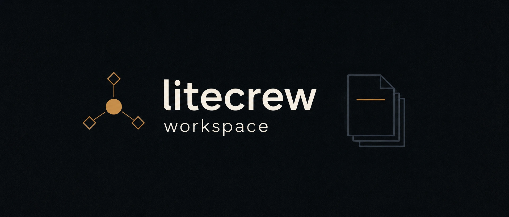
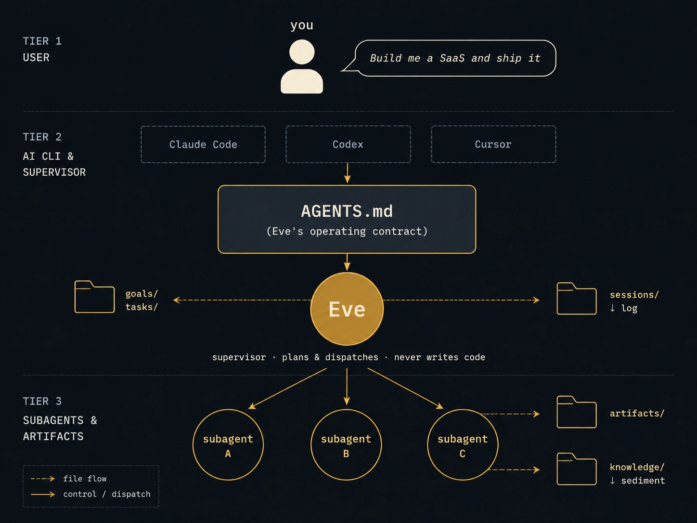
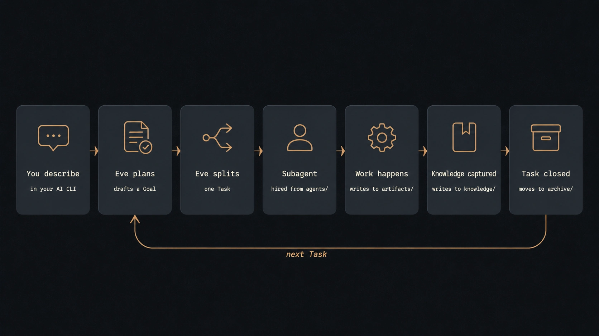

Open source paradigm for long-running AI work
All your AI work.
One workspace.
litecrew-workspace is a self-hosted directory of plain-Markdown conventions. A supervisor agent routes every piece of work to the right specialist subagent, knowledge persists as files, and the workspace stays continuous across sessions. No SaaS. No cloud. No telemetry.
git clone https://github.com/litecrew-ai/litecrew-workspace.git

The problem
Your AI work is fragmented.
Every domain found its tool. Every tool keeps its own chats, repos, and screenshots. Nothing you learn in one place carries to the next.
Software
Claude Code, Cursor
Sessions live and die inside a terminal.
Video
Veo
Prompts and clips buried in a web app.
Research
ChatGPT
Findings evaporate when the chat ends.
Art
Midjourney
A gallery of one-off generations.
The work scatters across chats, repos, and screenshots —
and every session starts from zero.
How it works
Three roles. Four file types.
One loop.
litecrew-workspace is not an app you install. It is a set of conventions your existing AI CLI already understands.
You
Describe work in plain language, in the AI CLI you already use. Interrupt, redirect, or ask for status at any time.
Eve, the supervisor
Emerges when your CLI reads AGENTS.md. She drafts Goals with success criteria, splits off Tasks, and dispatches subagents. She plans — and never writes code herself.
Subagents
Specialist workers hired from agents/ for one Task at a time. Frontend, research, video, hardware — the workspace hires what the work needs.
The contract between all three is four kinds of plain files — goals/, tasks/, knowledge/, and artifacts/ — together with a durable trace of everything that happened. Every stage writes to disk before it returns. The workspace state is the file system, which is why nothing gets lost between sessions.

The life of one request
Every request runs the same loop.
When a Task closes, the loop returns to Plan for the next Task — until the Goal is done.

What makes it different
Built to stay with you.
Not another tab. A workspace that compounds.
One workspace, many domains
Software, video, research, writing, ops — Eve routes each piece of work to the right specialist. No more context-switching across five tools.
Knowledge auto-loads
When you describe new work, Eve pulls relevant lessons from past Tasks. The workspace becomes continuous, not session-bound.
Goals are first-class
Multi-week projects get a real shape: success criteria, task chains, and a progress log. Not just session history.
Everything is plain Markdown
Goals, Tasks, Knowledge, Sessions — grep, git diff, and bat all work. No database to back up.
Empty by design
Ships with the paradigm and no opinions about your domain. Software, research, writing, hardware — same skeleton.
Zero lock-in
CLI-agnostic and model-agnostic. Works with Claude Code, Codex, Cursor, opencode. If litecrew vanishes, you keep a clean directory of Markdown.
Quick start
Running in under a minute.
Clone the workspace, open it in your CLI, say what you want. That is the whole setup.
Clone the workspace
A plain directory. Nothing installs, nothing runs in the background.
Open it in your AI CLI
Your existing CLI is the runtime. Claude Code reads the contract automatically; most modern CLIs auto-load AGENTS.md.
Describe the work
One sentence is enough to start. Eve takes it from there.
"Build me a SaaS landing page and ship it to Vercel."
Eve reads AGENTS.md, drafts a Goal capturing the outcome, splits off the first Task, dispatches a subagent, and writes progress into the workspace as it goes. You can interrupt, redirect, or ask for status at any time. When the Task closes, Eve captures the reusable lessons and reports back.
Use cases
If you can describe it,
Eve can run it.
These are not features. They are shapes the paradigm takes when you describe work in plain language.
Build a SaaS dashboard and ship it.
A Goal with success criteria. Tasks for schema, API, UI, auth, and deploy. Frontend and backend subagents hired from agents/, CI walked, lessons captured.
A shipped product with a full audit trail.
Produce a 60-second AI short from this script.
A pipeline Goal: storyboard, first-frame, image-to-video, voiceover, stitch, publish. Each stage is a Task; each engine choice becomes a knowledge note.
A repeatable production line for video.
Research projects X and Y, find our gap.
A research subagent is dispatched, repos are read, comparison tables are written, and conclusions sediment into knowledge/ for the next time you ask.
A benchmark that compounds instead of expiring.
Design an e-ink photo frame, ready for fabrication.
Component selection, schematic, PCB layout, then Gerber, BOM, and pick-and-place — every stage filed under artifacts/.
Fabrication-ready hardware files.
Build a side-scroller RPG prototype.
Game design document, art direction, MVP. A three-role pattern — planner, art director, engineer — runs from agents/.
A playable prototype with its own playbook.
Write a 5,000-word essay on topic X.
Research, outline, draft, revise — with the knowledge captured for the next essay on adjacent topics.
A writing practice that remembers.
The same workspace can hold all of these at once — or just one. You bring the work; the workspace brings the discipline.
On film
The loop, in motion.
Two minutes that show what a file-based workspace feels like.
Real files, real contracts: the directory tree, AGENTS.md, a dispatched Task, and the lifecycle — set to an ambient score.
From fragmented sessions to one persistent workspace — the kinetic-typography cut, subtitled.
Positioning
What it is not.
Five things litecrew-workspace deliberately is not.
- not a new CLI
- You install nothing. Your existing Claude Code, Codex, or Cursor is the runtime.
- not a SaaS
- No sign-up, no cloud, no telemetry. Files stay on your disk.
- not an agent framework
- No SDK, no graphs to wire, no API to learn. Conventions, not code.
- not a note-taking app
- Obsidian is for you to read. litecrew is for the AI to read — and write.
- not domain-specific
- Not Cursor for code, not Midjourney for art. The workspace that orchestrates them all.
FAQ
Common questions.
Which AI CLIs does it work with?
Claude Code reads CLAUDE.md automatically — the repo symlinks it to AGENTS.md, so the supervisor contract loads with zero configuration. Codex, Cursor, opencode, and most modern AI CLIs auto-load AGENTS.md or an equivalent project file. If yours does not, open AGENTS.md in your first message and the rest of the conversation follows the same paradigm.
Do I need to install anything?
No. git clone, open the directory in your CLI, and start describing work. There is no package to install, no server to run, and no database to provision.
Where does my data live?
In the directory you cloned — as Markdown files, versioned by git. Nothing leaves your disk. There is no cloud component and no telemetry.
What happens if litecrew disappears?
You keep a clean directory of Markdown. The paradigm is the files: goals, tasks, knowledge, artifacts. There is no service to shut down and no export step to race against.
Is this an agent framework?
No. There is no Python SDK, no graph DSL, and no API to learn. It is a set of plain-Markdown conventions — roles, file types, and a lifecycle — that your existing AI CLI already understands.
Get started
Stop restarting
from zero.
Clone the workspace, open it in your CLI, and describe the work. Everything after that belongs to you.
git clone https://github.com/litecrew-ai/litecrew-workspace.git